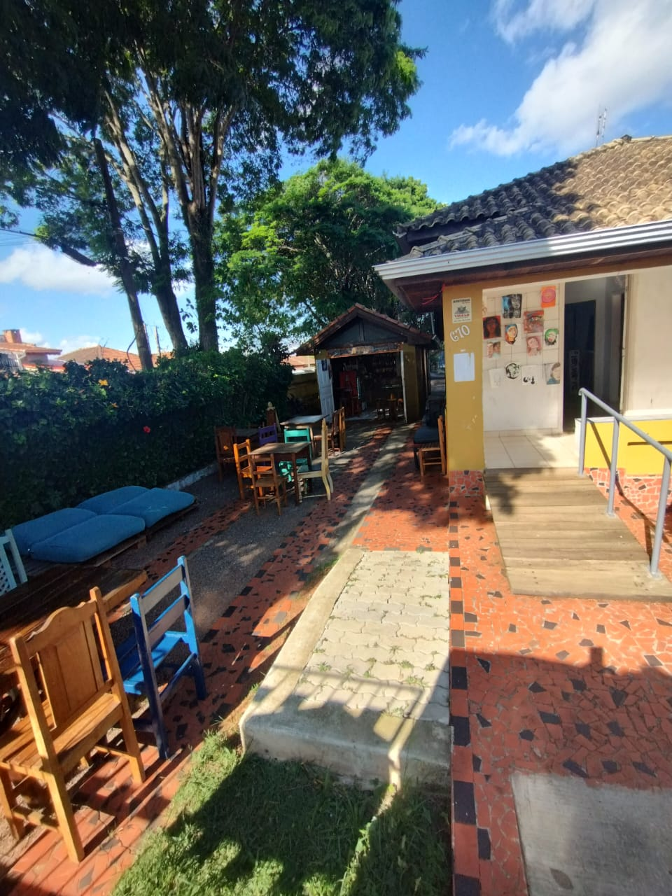
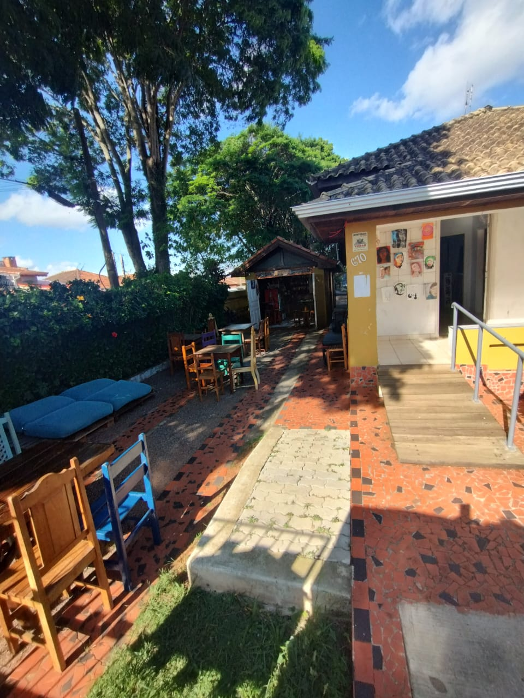
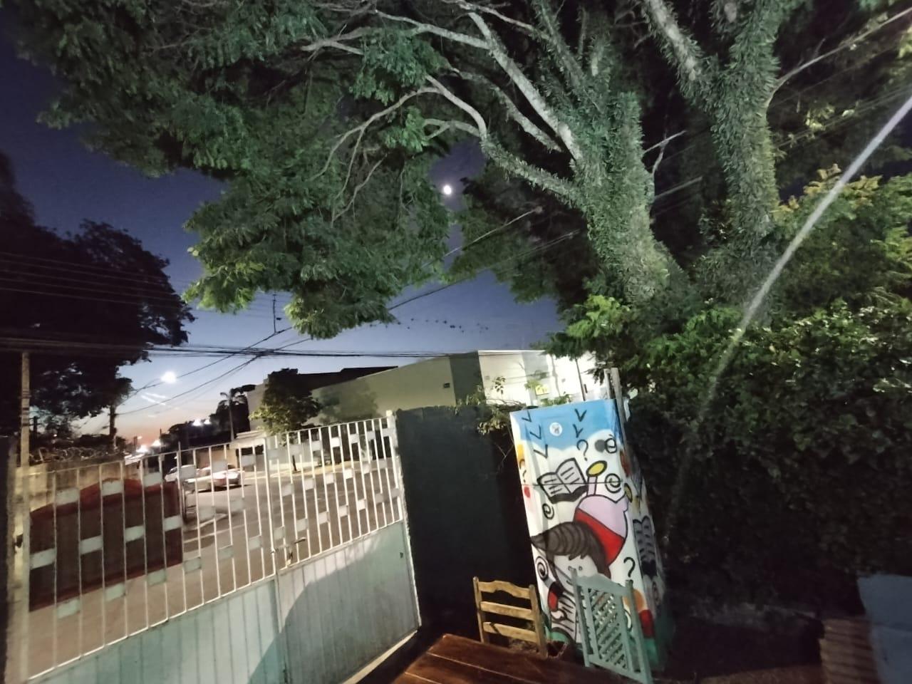
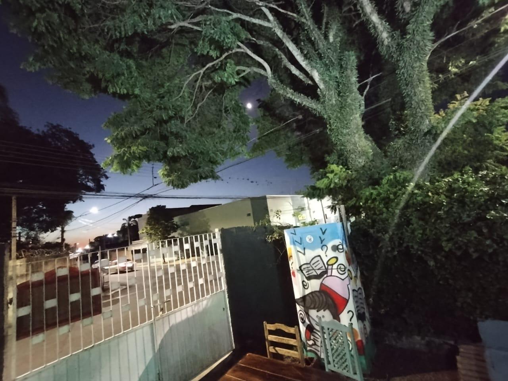

O Bitaca
Mais que um espaço cultural, o Bitaca é um ponto de encontro para a cultura underground de Capão Bonito.
Nascido do desejo de democratizar o acesso ao cinema e às artes, o Bitaca se tornou referência em:
- 🎬 Cinema Independente e Audiovisual
- 🖼️ Galeria de Arte e Exposições
- ☕ Café-Bar Cultural
- 🎭 Eventos e Saraus Comunitários
Localizado em Capão Bonito/SP, somos apoiados pela Lei Paulo Gustavo e PNAB, fomentando a produção cultural local e preservando a memória audiovisual brasileira.

 

 
